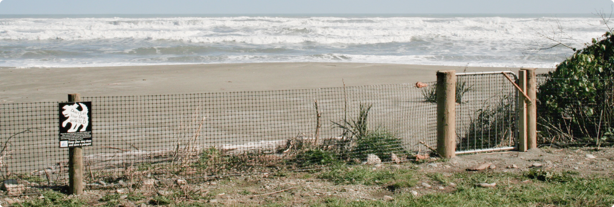

WHY BUILD A FENCE?
Where the Coast Road is close to the sea, penguins may choose to nest on the ‘wrong’ side of the road.
Both parents will feed penguin chicks and they often go to sea to forage every day, leaving around dawn and returning after dark. These small birds don’t stand a chance against vehicles and large numbers of birds have been killed on some sections of the road.
A fence on the sea side of the road was the obvious solution as it restricts the penguins to nesting habitat below the road, preventing them nesting and therefore crossing to the other side of the road.

WHY BUILD IT HERE?
The West Coast Penguin Trust has been recording penguin mortality since its inception in 2006.
A few sites along the Coast Road have been found to be hotspots for road kill. Three locations on the Coast Road (SH6) have claimed the lives of over 100 penguins in five years. They are the McCarthy Creek area, the south side of the Fox River Bridge, and Pahautane Beach to Hatters Bay.
The annual penguin census, along with scientific studies, suggest that blue penguin numbers on the West Coast are continuing to decline.